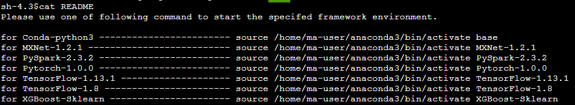

For developers who are used to coding, the terminal function is very convenient and practical. This section describes how to enable the terminal function in a notebook instance and switch the engine environment in the terminal.
Enabling the Notebook Terminal Function
- In the notebook instance list, click Open in the Operation column of the target notebook instance to go to the Jupyter Notebook page.
- On the Files tab page of the Jupyter page, click New and select Terminal. The Terminal page is displayed.
Switching Engine Environments on the Terminal
You can switch to another AI engine environment in the terminal environment of Jupyter.
- Create and open a notebook instance or open an existing notebook instance in the notebook instance list.
- On the Files tab page of the Jupyter page, click New and select Terminal. The Terminal page is displayed.
- View README in the current directory to obtain your required information. For example, to switch to TensorFlow-1.8, run the source /home/ma-user/anaconda3/bin/activate TensorFlow-1.8 command. To exist the environment, run the source deactivate command.
Figure 1 Output after command execution
